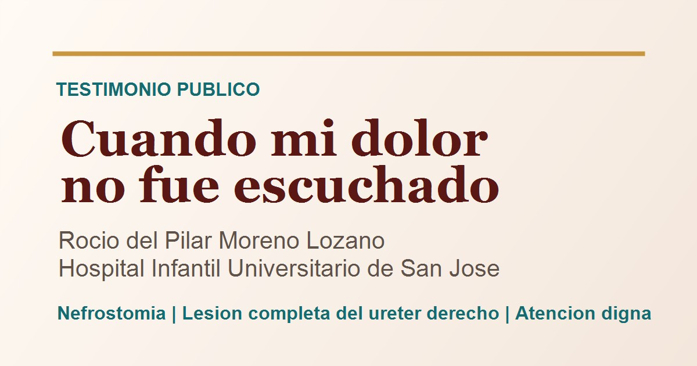

Relato destacado
Cuando mi dolor no fue escuchado
Relato de Rocío del Pilar Moreno Lozano sobre una cirugía, dolor persistente, lesión completa del uréter derecho, nefrostomía y afectaciones posteriores.
Leer relato completo